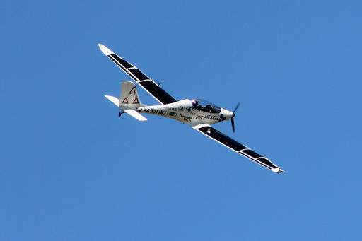

Aerospace firm successfully tests solar-powered aircraft
June 10, 2016 by Frank Eltman
A test pilot successfully flew a solar-powered prototype aircraft on Friday for a company that envisions manufacturing a fleet of drones to provide aerial internet service for an estimated 4 billion people worldwide.
The test flight by Luminati Aerospace LLC took place at a former Northrop Grumman defense plant on eastern Long Island that once made military aircraft. Speakers at a ceremony before the flight recalled that Charles Lindberg took off for his historic 1927 solo flight to Paris from an air strip in nearby Nassau County, and others noted that the spacecraft that landed men on the moon was built in the Long Island suburbs east of New York City.
"This is a dream come true," Luminati founder and CEO Daniel Preston said. "Long Island is known as the Cradle of Aviation, and we want to do our part to keep it here where it belongs."
Pilot Robert Lutz flew the VO-Substrata aircraft for about 20 minutes in the first test flight opened to the public. The white aircraft features wing-mounted solar cells and has a wingspan of about 43 feet. Logos of several companies and other entities involved with its production are plastered on both sides, similar to the sponsor decals on NASCAR race cars.
The prototype aircraft allows for a pilot to control it, but eventually Luminati, which is based in Calverton, will build unmanned drones that can fly at 60,000 feet or more. Luminati hopes to start manufacturing by the end of the year. Lutz said after his flight that the aircraft is "very birdlike."
"You know you go up there and you feel like you're in the environment up there with the creatures," he said. "Hawks will be circling around, and they kind of flock to you. It's the only aircraft I've ever flown where I can hear a helicopter next to me. It's a little spooky but pretty cool."
Luminati paid $3.4 million last year to acquire 16.3 acres of land from the operator of a now-closed skydiving facility on the former Northrop Grumman property, and it announced intentions to develop the next generation of drones at the site. Preston, who holds more than 1,200 patents, formerly founded and operated Atair Aerospace from 2001 to 2008.
He has repeatedly refused to disclose the identity of a tech company that reportedly is involved in the enterprise. Google, Facebook and others tech companies all have been involved with initiatives in the field. He confirmed that, besides private business uses for the drones, the company is interested in supplying aircraft for intelligence, surveillance and reconnaissance uses.
"We view it as our patriotic duty to do so," he said. He said using technologies combining solar power with wind energy harvesting and using composite materials to make ultra-light, ultra-strong aircraft, the goal is to keep the drones airborne perpetually.
"I really can't think of any engineering project today that has a greater social impact than bringing communications for many people in the world that don't have it," he said.
Read more at: Phys.Org